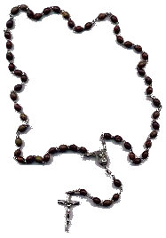
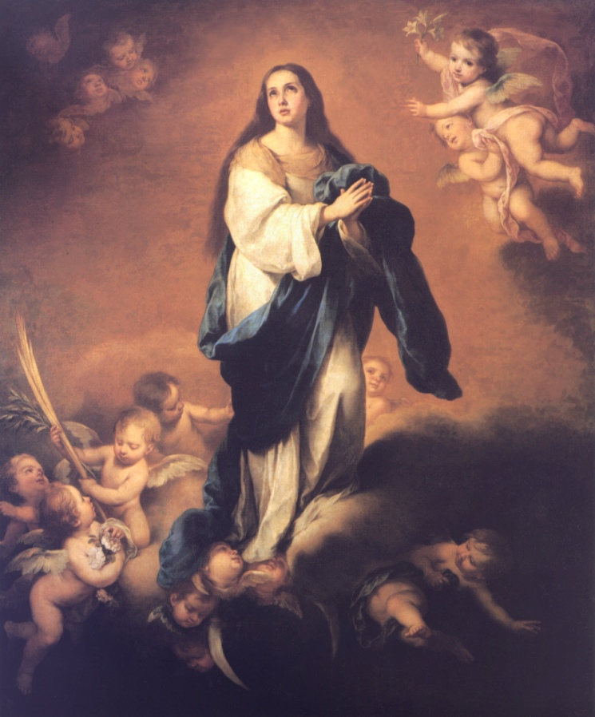

Na fidelidade à missão que JESUS confiou-nos, a Igreja deve cada vez mais seguir o seu próprio Mestre, que não veio para ser servido, mas para servir. Assim, evangelizando a Família e o Matrimônio, a Igreja anuncia a novidade que o SENHOR trouxe para o amor conjugal e a vida familiar. Esta missão que compete a todos nós, é ainda hoje mais urgente e não menos exigente.
I – PREPARAÇÃO PRÓXIMA PARA O CASAMENTO
No PORTAL do APOSTOLADO, temos um Site com este mesmo titulo, cujo assunto é utilizado no CURSO DE NOIVOS, em forma de palestras, para a preparação dos casais ao Matrimônio. E pelo fato do mencionado Site englobar as principais informações e enumerar as mais importantes providências a serem seguidas para a uma vida a dois, não vamos repetir o assunto, fornecendo apenas o endereço do Site:
II – PREPARAÇÃO REMOTA
A Preparação Remota é aquela realizada pela Família, ao longo dos anos. A Família é à base da preparação para o Casamento, pois é nela que as pessoas desde os primeiros anos de existência, iniciam a caminhada da própria personalização a partir da experiência básica de confiança na vida, e a seguir, olhando para o seu interior, cada um vai-se descobrindo a si mesmo e compreendendo a necessidade de se abrir em doação aos outros.
É na atmosfera da vivência familiar que as crianças experimentam as primeiras orientações profundas de afetividade, e na continuidade do crescimento começam a definir os rumos de sua sexualidade. Neste assunto, cabe aos pais, em primeira instância, orientar os seus filhos em relação ao sexo, explicando a função do mesmo dentro do Matrimônio, usando palavras adequadas e diretas, sobretudo, bem ajustadas as suas idades e conhecimentos.
Assim sendo, o lar é o lugar por excelência para a primeira educação humana e religiosa que, na visão cristã, tem como núcleo essencial o Amor de DEUS, inseparável do amor ao próximo. Por essa razão, as famílias são chamadas a atuar como verdadeiras “Igrejas domésticas”.
Esta é uma consequência absolutamente natural em face de todas as criaturas possuírem uma “parte humana”, o seu Corpo, gerado pelo amor de seus pais abençoado por DEUS através do Sacramento do Matrimônio, e uma “parte Divina”, a sua Alma, que o CRIADOR envia da eternidade no exato momento em que acontece a fecundação, o espermatozóide do homem penetra no óvulo da mulher dando início a gestação. Este é o passo inicial da vida.
Isto significa dizer que todos os seres humanos possuem uma parte Divina e por essa razão natural, todos pertencem a DEUS. Ora, se nós criaturas pertencemos a DEUS como podemos viver em plenitude distante DELE?
Torna-se evidente a necessidade das pessoas procurarem estabelecer com o SENHOR um sincero e dedicado relacionamento de amizade, não só para contar com a preciosa ajuda e a bondade de DEUS, mas sobretudo, como natural manifestação de seu filial amor e também, para revelar ao SENHOR sua eterna gratidão pelo dom da própria vida. O CRIADOR diariamente derrama imensa e torrencial quantidade de graças e virtudes sobre a humanidade de todas as gerações, independentemente de qualquer merecimento nosso, que as pessoas acolhendo, irão melhorar as suas qualidades pessoais e aperfeiçoar todos os dons e virtudes que ELE ornou a nossa vida, convidando-nos para o Amor Divino. Então, é necessário e evidente termos uma sólida relação de amizade com o SENHOR, como resposta e agradecimento ao chamado e as preciosas doações de DEUS.
Deste modo, torna-se evidente que o caminho certo para educar as nossas crianças é colocando-as junto de DEUS, seguindo a inspiração do ESPÍRITO SANTO e nos esforçando em manter a família sob a proteção maternal e carinhosa de NOSSA SENHORA, NOSSA MÃE SANTÍSSIMA.
Esta argumentação suscita que as Famílias devem ser criadas e desenvolvidas a luz do Evangelho, a fim de serem auxiliadas a encontrarem os seus próprios caminhos, partindo de autênticos valores humanos e também desenvolvendo a sua capacidade crítica, primordialmente diante da realidade e das muitas idéias nocivas que os meios de comunicação social, de modo especial a televisão, atualmente veiculam em relação ao Matrimônio e a Família.
Quando as famílias não se desincumbem da missão de educar os filhos para o amor cristão, de filhos de DEUS, vão fracassar irremediavelmente na preparação dos mesmos para o Casamento. Por este motivo a formação dos pais, com a conversão do coração e um conhecimento interessado nas coisas de DEUS, constitui parte essencial da Preparação Remota para o Matrimônio de seus filhos.
ATUAÇÃO DA ESCOLA NA PREPARAÇÃO REMOTA
A Escola além de dilatar e consolidar a experiência social das pessoas, quando consegue estabelecer uma convivência sadia e disciplinada moralmente entre os sexos diferentes, pode contribuir para completar, sob vários aspectos, a educação que os filhos receberam da família.
Na Escola, a educação para o amor não deve ser exclusivamente limitada a informações isoladas e nem somente aos aspectos biológicos.
O assunto consiste num conjunto de valores que deve ser bem elaborado e transmitido dentro de um processo educativo que, para ser válido e funcional, deverá respeitar cada pessoa na sua realidade transcendente de filho de DEUS. Para isto seria o ideal existir uma harmoniosa integração família-escola, e, dentro da Escola, uma completa integração entre os vários professores das diversas matérias escolar. Sabemos ser difícil alcançar a perfeição ideal. Entretanto o possível deve ser realizado em cada Escola e por cada professor, sobretudo, lembrando que cada pessoa é um ser divinizado, a Alma que nele habita, voltará e permanecerá eternamente na presença de DEUS. Esta realidade mostra que cada pessoa merece o respeito e a melhor atenção porque, sobretudo, é nosso irmão em CRISTO. Isto não é poesia e nem retórica, mas a verdade que deve ser entendida e praticada.
A Igreja pode e deve colaborar com a educação escolar. Em primeiro lugar, atuando na formação de professores cristãos, especialmente de professores para as áreas de conhecimento específico para o Matrimônio e para a Família. Em segundo lugar, ajudando na elaboração de subsídios pedagógicos e de outros meios que sejam apropriados a essa educação. As Escolas católicas deverão primar pela observância destas providências.
Na Pastoral da Juventude, as celebrações litúrgicas terão papel fundamental na educação. As Missas para os jovens e também o esforço sacerdotal para a prática da Confissão unitária (atendendo somente um grupo de jovens em cada dia da semana), poderão desempenhar uma função importante na educação para o amor. Nestas ocasiões sejam focalizados os aspectos da fidelidade, da renúncia em favor do outro, do sacrifício por amor, estimular o exercício do diálogo intenso e sincero entre as pessoas para que haja melhor entendimento e compreensão. Também não pode faltar às orações cotidianas, necessárias a uma existência em plenitude e essencial para manter a esperança que cada um deve possuir na misericordiosa graça do SENHOR.
PERSEVERANTE CULTIVO DA FÉ
É outra providência que deve ser cuidadosamente
incentivada, começando pela atuação da Família e 
As Famílias devem despertar nas suas crianças uma “intensa curiosidade” sobre DEUS, buscando mostrar de maneira prática e direta que ELE existe e vive no meio do povo que ELE criou, evidenciando a imensidão do Amor Divino e destacando a bondade infinita e misericordiosa do CRIADOR.
Esta abordagem que julgamos extremamente importante e necessária a formação de uma personalidade conscientemente equilibrada, pode e deve ser alicerçada na revelação Divina através da Natureza, que fornece uma visão abrangente e inquestionável sobre a existência de DEUS. Como subsídio autêntico sobre o assunto, anexamos o texto a seguir.
À noite, ao contemplar o céu repleto de estrelas, por mais indiferente que seja a pessoa, um olhar de curiosidade e admiração sempre surgirá em sua face, deixando-a embevecida, insensivelmente mergulhada numa reflexão diante da imensidão do cosmo e da beleza que se descortina diante do seu olhar. Uma convicção logo lhe invade o espírito dando-lhe a certeza de que aqueles corpos celestes não estão ali em vão, só para embelezar as noites terrestres, mas que estão nas suas órbitas ordenados pela Vontade do CRIADOR, essencialmente para cumprirem uma finalidade misteriosa no Universo Divino.
Olhando mais fixamente os astros, causa encantamento e surpresa o conhecimento do movimento harmonioso que existe em cada um deles e na relação de um com os outros, ressaltando o permanente equilíbrio observado ao longo dos séculos, a correta obediência a uma trajetória, a atração que possuem em função das suas dimensões, formando a sua própria gravidade, exercendo influência nos astros mais próximos, inclusive, determinando condições de vida. Em nosso Sistema Planetário, como é admirável saber que o Sol está há tantos milhares e milhares de anos colocado em sua órbita, seguindo sempre a mesma rotação, com o mesmo ardor incandescente, lançando labaredas chamejantes no espaço, aquecendo, iluminando e dando vida aos seres na Terra! De qual matéria se sustenta a fogueira solar, ardendo sempre do mesmo modo sem se gastar, sem se extinguir? (fica evidente que não é uma combustão de óleo, de gás, ou de madeira, mas que se trata de um fogo diferente, sem dúvida, de um fogo sobrenatural). Um grande mistério que a ciência menciona, tece considerações e elabora teorias, mas não consegue explicar de modo convincente como se formou o universo e o mecanismo do seu perfeito funcionamento e equilíbrio?
Os caminhos da ciência por mais completos que sejam às vezes apresentado através de um emaranhado e complexo conjunto de teorias, à medida que os estudos vão se afunilando para as conclusões, convergindo para o resultado final, surge como única solução racional e lógica, que tudo no universo tem origem no poder criador de DEUS, embora esta verdade seja refutada pelos céticos e ateus. Entretanto, somente a intervenção Divina dá consistência ao perfeito equilíbrio que existe na natureza e explica de modo inquestionável a causa e o efeito de todos os acontecimentos.
Por outro lado, olhando mais detidamente o nosso planeta vemos a grandeza do mistério se configurar numa infinidade de questões: as sementes espalhadas no solo germinam, crescem e se transformam em plantas, hortaliças e arvores frondosas, algumas repletas de saborosos frutos, com tipos e tonalidades diferentes, enquanto outras apresentam lindas e exóticas folhagens, com flores coloridas, pétalas aveludadas, com perfumes suaves que satisfazem aos mais exigentes e extravagantes conhecedores; da mesma forma que existem muitas variedades que são utilizadas em arranjos arquitetônicos e decoração ornamental, embelezando as cidades, os lares, sempre trazendo alegria ao coração. Como nasceram as primeiras árvores frutíferas? E as flores, com seus variados e notáveis matizes e agradáveis aromas?
Seguindo o mesmo raciocínio a expectativa aumenta sempre ao questionarmos: E os peixes que vivem nos rios e nos mares? De onde veio esta gama incalculável de tipos e espécies que povoam disseminados em todas as águas do globo terrestre? Refiro-me aos primeiros peixes, aqueles que colocaram os ovos para nascerem os demais. De onde vieram? Quem os colocou em nosso planeta? E os diferentes tipos de aves e animais? E tudo enfim que existe na Terra, como surgiram e de que modo foram formados?
Nem as teorias “transformistas”, na ânsia de querer justificar sua sentença: “na natureza nada se perde, tudo se transforma” , não consegue explicar as grandes interrogações da vida, porque logo na origem esbarram com a pergunta: de onde vieram os primeiro peixes, os primeiros animais, as primeiras árvores frutíferas?
Sem dúvida, uma avalanche desconcertante de interrogações, que só encontram respostas na bondade criadora do Sagrado Coração do PAI ETERNO.
Esta realidade nos faz compreender que a revelação Divina através da Natureza, constitui uma fonte inesgotável de testemunhos da existência de DEUS, assim como de sua atuação no Universo que ELE mesmo criou e administra. Como afirmou o salmista, “DEUS cria e administra as Obras que ELE faz.” (Sl 148, 5-6)
Então, se DEUS existe e criou à humanidade, nós pertencemos a ELE, porque o SENHOR é nosso PAI e CRIADOR.
Existem melhores motivos e razão mais consolidada que suscitem as pessoas a cultivarem em sua vida uma profunda e sincera relação de amizade com o CRIADOR?
=SITUAÇÕES PARTICULARES=
“A FALTA DE FÉ DOS NUBENTES”
É um problema pastoral que deve ser enfrentado com discernimento e paciência, quando um casal de nubentes batizados, embora declarem não ter fé, pedem o Casamento religioso por outros motivos (respeito à tradição, conveniências sociais, insistência das famílias, etc.).
Na verdade, ninguém, a não ser DEUS, pode medir a fé de uma pessoa e expressar um juízo definitivo sobre sua autenticidade.
Assim sendo, como na atualidade este problema está se tornando cada vez mais frequente, as reflexões e sugestões que serão apresentadas deverão ser assumidas com muita prudência e espírito pastoral, evitando atitudes arbitrárias, com muito mais rigor ou o lado oposto, com excessiva permissividade.
A primeira atitude: Evangelizar.
As Paróquias possuem o CURSO DE NOIVOS de preparação próxima para o casamento e possui também a PASTORAL DA FAMÍLIA, necessária aos novos casais para sua completa integração na Igreja e primordialmente, para a evangelização daqueles que confessam não ter fé.
Segunda atitude: Evitar a Rejeição.
Deve ser evitada tanto a recusa imediata quanto a fácil celebração do Sacramento, em todos os casos em que haja dúvida sobre a fé daqueles que pedem o Matrimônio religioso. A Igreja não é uma comunidade de perfeitos, embora isto fosse o ideal. A pastoral exige atitude de compreensão, de diálogo e de evangelização, suscitando aos noivos a participarem efetivamente da vida comunitária.
Terceira atitude: Caso extremo.
Uma atitude pastoral justa e equilibrada exige que não se sacrifique nem a verdade e nem a caridade. A celebração do Sacramento deverá ser recusada só depois de paciente e repetidamente o pároco fracassar nas tentativas de obter um gesto de fé dos nubentes.
DIREITO AOS SACRAMENTOS
É oportuno lembrar:
1 – Os cristãos (aqueles que foram batizados) têm direito fundamental ao Matrimônio, de tal modo que nem o Bispo, nem a Conferência Episcopal têm autoridade para impedir à celebração do Sacramento.
2 – É necessária a FÉ para a validade do Matrimônio Cristão. Ela se manifesta clara diante da recusa formal dos nubentes, ou de um deles, comprovando a falta de fé, tornando inválido o Matrimônio, se celebrado. Tal recusa da sacramentalidade do Matrimônio pode configurar-se sob diversos aspectos:
a) Enquanto os noivos, como “ministros” do Sacramento, excluem a intenção de fazer o que faz a Igreja (ou seja, todos os outros casais cristãos);
b) Enquanto os noivos, como “destinatários”, excluem a própria vontade de receber o Matrimônio como Sacramento;
c) Enquanto excluem as propriedades essenciais de unidade e indissolubilidade do Matrimônio (ou seja, não aceitam a indissolubilidade do Matrimônio);
d) Enquanto, apesar de afirmarem ter fé, participam habitualmente de cultos não cristãos (umbanda, candomblé, etc.).
RITO SACRAMENTAL DE CELEBRAÇÃO DO MATRIMÔNIO
É encontrado num livreto próprio escrito sob as Orientações do Episcopado Nacional editado e publicado pela CNBB.
VIDA FAMILIAR
As atividades que visam à preparação para o Casamento devem ter o seu necessário desdobramento no acompanhamento dos novos casais, através de múltiplas formas de apoio, convivência e formação, que promoverão a sua progressiva inserção na vida eclesial.
Esta realidade acena para a "prioridade em todas as Paróquias e Dioceses", da criação de equipes de casais bem preparados para atuarem decididamente na Pastoral Familiar, no Curso de Noivos e no Curso para o Batismo.
Grupos de casais e outros agentes de pastoral familiar deverão ser motivados a assumir a responsabilidade de promover contato e aproximação com os novos casais, desde a fase de preparação ao Casamento e, posteriormente, através de visitas, promoções paroquiais e outras formas de convite que facilitem o relacionamento interfamiliar.
Também o clero deve ser incentivado a aumentar a sua participação nas atividades de acompanhamento aos novos casais. Quando não tiver condições de atender a um grande número de famílias, cuide da formação de equipes de casais que assumam o mesmo trabalho, inclusive na dimensão evangelizadora e de integração na comunidade eclesial.
O Casal e a Família atingirão o maior aproveitamento e intensidade na dinâmica do amor, na medida em que a fé dos dois descobrir a presença de DEUS, que é Amor dentro do próprio amor humano, que ELE conduz com a sua Divina graça para a perfeição e santidade, apesar das fraquezas e limitações das pessoas.
FECUNDIDADE RESPONSÁVEL
Em nosso Site PREPARAÇÃO PARA O CASAMENTO – CURSO DE NOIVOS, endereço abaixo, existe um link “HARMONIA SEXUAL” que trata com profundidade do assunto. Por esse motivo fornecemos tão somente o endereço do Site:
MOVIMENTOS E GRUPOS FAMILIARES
Os movimentos de leigos estão em completa comunhão com a hierarquia da Igreja e ajudam diretamente na missão paroquial, prestando relevantes serviços ao Povo de DEUS e a toda sociedade, na sua área específica de atuação.
Sua existência decorre de formas particulares e múltiplas da vivência da fé, por parte de cristãos cujo carisma os leva a se inserirem na vida da Igreja através de estruturas intermediárias especializadas, nas quais sua vocação apostólica tem melhores condições de se realizar plenamente.
Tais movimentos, não só os familiares, assumem por sua própria iniciativa, sem esperar necessariamente o impulso da hierarquia, os estudos e pesquisas do assunto que projetam atender, manifestando-se sobre os possíveis resultados e oferecendo a hierarquia da Igreja subsídios e propostas de atuação sobre o determinado assunto focalizado. Como movimento de leigos, enriquecem, com sua visão e interpretação, as reflexões da hierarquia, inclusive sugerindo, se for o caso, a renovação ou atualização de atitudes pastorais.
Por outro lado, não cabe somente aos movimentos familiares assumir as tarefas da Pastoral Familiar. Ela atua de conformidade com a Igreja Paroquial, seguindo as orientações fundamentais da CNBB sobre os assuntos sociais, políticos e morais. Mas elas podem e devem ser auxiliadas por todos os grupos e profissionais que se dispuserem a dedicar parte de seu tempo a exercitarem o Apostolado Familiar.
Cabe também recomendar todo o apoio e incentivo aos Institutos Familiares especialmente aos dedicados à orientação conjugal e familiar, onde conselheiros treinados e profissionais habilitados estejam a disposição dos casais, sem distinção de classe ou nível econômico. Sua existência deve ser sustentada e divulgada e a eles devem ser encaminhados aqueles que necessitam de apoio especializado.
DESAFIOS A SEREM ENFRENTADOS
A Igreja ao formar os agentes da Pastoral Familiar deverá proporcionar-lhes conhecer quatro documentos importantes, que lhes serão muito úteis na missão evangelizadora: Familiaris Consortio, Carta às Famílias, Evangelho da Vida e Diretório da Pastoral Familiar. Na modernidade de nosso tempo eles terão que enfrentar, defender e promover:
- A dignidade humana.
- O Sacramento do Matrimônio
- A inviolabilidade da vida e da família.
É responsabilidade de todos, dos religiosos, padres, bispos e leigos, dar assistência, instruir e cuidar com atenção das Famílias, colocando em realce o seu valor e a necessidade de ser preservada, defendida e promovida em todas as oportunidades.
MATRIMÔNIOS MISTOS
Por Matrimônio misto entendemos o Casamento entre duas pessoas batizadas, das quais uma é católica e a outra não é católica, ou seja, professa outra religião cristã. A Igreja dá especial atenção a este tipo de Matrimônio, porque são duas pessoas que acreditam em CRISTO e receberam devidamente o Batismo. Então, eles possuem certa comunhão espiritual, embora imperfeita em relação à Igreja católica.
Essa comunhão é mais plena com os Orientais separados, que conservam em suas Igrejas os verdadeiros sacramentos, particularmente a Ordem e a Eucaristia.
O mesmo não acontece com as Igrejas ditas “reformadas” ou “protestantes”, cuja doutrina e praxe relativa aos sacramentos diferem daqueles da Igreja Católica. Aliás, em geral, as comunidades nascidas da Reforma protestante não consideram o Matrimônio como Sacramento, embora lhe atribuam certo caráter sagrado, como sendo uma instituição que corresponde à vontade de DEUS.
Os Matrimônios Mistos são regidos por documentos especiais da Sagrada Congregação para a Doutrina da Fé e complementados para o Brasil, pelas Normas da CNBB. As principais Normas são:
-Dispensa do Ordinário (Bispo). A Norma exige dispensa prévia do impedimento canônico, por parte do Ordinário do lugar.
-Instrução conveniente. È exigido que sejam ministradas a ambas as partes a conveniente instrução prévia sobre os fins e as propriedades essenciais do Matrimônio. Esta preparação poderá ser feita no âmbito dos CURSOS DE NOIVOS, mas geralmente, será oportuna uma instrução pessoal da parte não católica, pelo pároco, por pessoas ou casais credenciados.
- Compromisso relativo à Fé e a educação dos Filhos. Para os interessados receberem a dispensa do Ordinário, além da apresentação de causas reais, exige-se da parte católica uma declaração, de que está disposto a afastar de si o perigo de perder a fé e, fazendo a promessa de que fará todo o possível para que os seus filhos venham a ser batizados e educados na Igreja Católica.
- Forma canônica para a liceidade. [(Conformidade ao direito) com os Orientais]. Nos casos de Matrimônio de um católico com um cristão oriental, a forma canônica da celebração do Matrimônio só obriga para a liceidade, ou seja, só obriga ficar de acordo com o direito eclesiástico; para a “validade” basta a presença de um ministro sacro, mesmo não católico, mas validamente ordenado.
- Forma canônica para a validade com os outros. Nos casos de Matrimônio de um católico com cristão não oriental (anglicano, protestante, etc.), a forma canônica é requerida para a validade do Casamento. Em caso de graves dificuldades, porém, o Ordinário (o Bispo) do lugar tem faculdade de dispensar da forma canônica. Em substituição da forma canônica dispensada, será exigida prestação de consentimento dos nubentes em ato público, civil ou religioso, a ser registrado nos livros da paróquia.
- Rito Litúrgico. Para a forma litúrgica usa-se o rito do Matrimônio sem Missa ou, com licença do Bispo, o rito do Matrimônio na Missa sendo respeitadas as normas da lei geral em relação à Comunhão Eucarística.
-Evitar qualquer aparência de um duplo rito. Não será realizada qualquer cerimônia que possa dar aparência de duplicidade ao rito Matrimonial que é um só. Isto, evidentemente, não exclui que o ministro de um rito não católico participe ativamente de alguns momentos da cerimônia do rito católico, como na exortação final aos noivos, após os atos presididos pelo ministro católico que recebe o consentimento dos nubentes.
Cristãos separados podem ser padrinhos ou testemunhas num Casamento católico. Católicos podem ser testemunhas e padrinhos de um Casamento celebrado entre cristãos não católicos, quando válido.
-A Igreja deve ajudar os cônjuges e os filhos do Matrimônio Misto. Cabe ao Bispo, aos párocos e a todo o povo de DEUS ajudar o cônjuge católico e os filhos nascidos do Matrimônio Misto no desempenho de suas obrigações e na educação da fé, sempre visando a desenvolver e fortalecer a unidade conjugal e familiar.
-A Igreja deve também sanar as eventuais situações irregulares. Nos casos em que católicos casados com outros cristãos sem preencher as condições para a validade de seu enlace, desejem voltar a pratica dos sacramentos, é exigido deles a renovação do consentimento na forma das disposições canônicas ou, se isto for impossível por recusa da parte não católica, o Ordinário do lugar pode conceder a “sanatio in radice”.
-Matrimônios Mistos celebrados com dispensa da forma canônica. Deve existir uma necessária atenção aos Casamentos Mistos celebrados com dispensa de forma canônica. Ao invés de simplesmente conferir-se validade ao ato civil, realizado perante o Juiz, seria conveniente permitir ou até aconselhar uma celebração num local de culto, em clima de oração e de fé. Para esta celebração exigir-se-á a licença do Bispo do lugar.
AÇÃO PASTORAL EM FACE DA EXISTÊNCIA DOS PROBLEMAS FAMILIARES ESPECIAIS
O número dos problemas matrimoniais e familiares tem aumentado, colocando em perigo e até levando ao fracasso muitos casamentos. A evolução social e cultural dando ênfase ao consumismo e lazer, escancara a vontade pessoal uma permissividade irrefreável que dificulta grandemente a fidelidade entre os cônjuges. A situação atual do Casamento, encarado hoje com “menos responsabilidade” por grande parte dos nubentes e sendo menos apoiado como era na sociedade patriarcal, exige dos dois um grau de maturidade e de ajustamento mais profundo e muito mais perseverante.
Dessa forma, a ação pastoral deverá ter muita lucidez e discernimento para elaborar respostas adequadas que venham ajudar na solução dos problemas.
Recomendamos para os casos relacionados a seguir, serem consultadas as instruções contidas no livro da CNBB, “Pastoral Familiar”.
-Uniões de fato não regularizadas. Ou seja, sem reconhecimento jurídico, por motivo de pobreza dos cônjuges ou pela recusa da legalização do laço matrimonial.
- Forma civil e forma canônica do Casamento.
- Casamento religioso de casados apenas civilmente e separados.
- Separação de fato e desquite.
- Os divorciados. (Diante dos divorciados, a Igreja como CRISTO, reafirma a verdade, condena o erro, mas acolhe com misericórdia o pecador que busca a conversão do coração).
PALAVRAS FINAIS
Encerramos estes subsídios evidenciando a
necessidade imperiosa das pessoas que trabalham em benefício da 
Assim, para que a Missão vá alcançando os resultados animadores que todos desejam, torna-se imprescindível não se esquecerem de que também são seres humanos iguais aos que buscam ajuda, e que por isso mesmo, devem invocar ao Divino ESPÍRITO SANTO, sabedoria, inteligência e discernimento para um perfeito cumprimento da missão, lembrando-se das suas próprias imperfeições, das suas vaidades e do orgulho pessoal, a fim de que possam superar os seus defeitos e atuar de modo dedicado, perseverante e fiel como operários do SENHOR.
Deverão ter sempre em mente, que a humanidade é a mesma em todas as gerações, desde os nossos primeiros pais Adão e Eva, até a atualidade. O homem e a mulher de hoje, não são diferentes de nossos ancestrais. Eles possuem as suas virtudes e qualidades pessoais, mas também tem as suas fraquezas, limitações e defeitos. Não importa a posição ou o cargo que ocupam, nem a idade e nem a grandeza dos seus conhecimentos, se é engenheiro ou sacerdote, advogado ou mecânico. É o mesmo ser humano que tem uma Alma imortal Divina vestida com o Corpo que lhe foi dado pelos seus pais. Pela Vontade do CRIADOR o amor vive gravado na Alma imortal que envolvendo o Corpo o convida e o estimula ao amor espiritual, ao amor puro e santificado. Todavia o amor humano em todos os tempos, por influência do maligno, sofre uma avassaladora e perniciosa ação que quer modificá-lo, deformando o seu sentido e suscitando a destruição do Amor Divino, que é o seu modelo e fundamento.
Em nossos dias é comum os periódicos informar que a humanidade caminha para o caos, que a perdição humana atingiu um grau insuportável de decadência moral e que uma grande crise envolve a humanidade! Mas, na verdade, tudo o que vemos acontecer hoje em diversas partes do mundo, sempre existiu, sempre aconteceu, conforme está nos livros antigos! Estas ocorrências não constituem novidades no seio da civilização! Apenas hoje, os crimes e as maldades praticados pela humanidade contra a humanidade, talvez sejam mais requintados ou talvez sejam maquinados com maior poder de destruição, assim como aumentou a frequência e a quantidade das transgressões, em face do consequente crescimento da população mundial. Também, em face da modernidade dos meios de comunicação e do incansável trabalho dos jornalistas, na ânsia de elaborar reportagens e cumprir fielmente o trabalho, divulgam os fatos com ênfase, imediatamente em todas as partes do mundo, à medida que vão ocorrendo. Estes acontecimentos geram as manchetes espetaculares e na maioria das vezes acompanhadas de imagens que atestam a tragédia ou o escândalo que, causam perplexidade no coração de todas as famílias.
Entretanto, nos séculos passados mesmo não existindo jornais e jornalistas, também não havendo televisão e cinema, o mal acontecia da mesma maneira impiedosa e cruel, com a mesma violência, mostrando que é fruto do mesmo pecado do homem e da mulher contra os seus semelhantes, contra os seus verdadeiros irmãos em CRISTO e contra DEUS.
Mas isto não significa dizer que o mal tomou posse da humanidade e que satanás domina os povos com poder. Em cada pessoa sempre existiu uma terrível batalha espiritual sem tréguas entre o “bem” e o “mal”. Na generalidade, ninguém é só “bem”, assim como ninguém é só “mal”. Os Santos são as exceções e testemunhos seguros de que o “bem” tem uma legião de vencedores, a qual sempre crescerá, quando o coração das pessoas quiser cultivar o direito, a justiça e o amor fraterno.
Então será a partir desta realidade que devem fundamentar o verdadeiro conceito sobre o problema familiar, compreendendo, sobretudo, que devem, em cada dia, preparar o próprio espírito para a missão e, mentalmente, se colocar nas mãos de DEUS. Com doçura e piedade deverão rezar suplicando a misericórdia e bondade do SENHOR, para que ELE interfira em seus passos, “empurrando o maligno para longe”, não permitindo que sob a forma da vaidade, orgulho ou cobiça, ele se manifeste no seu trabalho, prejudicando o valor e a boa intenção de seu apostolado.
O mencionado procedimento se torna necessário considerando que a vida cristã encontra a sua lei não num código escrito, mas na ação do ESPÍRITO SANTO que anima e guia quem o invoca, isto é, na “lei do ESPÍRITO que dá vida em CRISTO JESUS” (Rm 8, 2). “O Amor de DEUS foi derramado em nossos corações pelo ESPÍRITO SANTO que nos foi dado” . (Rm 5, 5)
Este fato abraça naturalmente todos os Casais e as Famílias cristãs, realçando que o seu guia orientador é o ESPÍRITO DE JESUS, que se hospeda nos corações de todos que recebem o Sacramento do Matrimônio e também, nos corações daqueles que conscientemente exercem o apostolado em prol da Família.
Assim, torna-se necessário que a nova “cultura emergente”, esta mesma que vem modificando o comportamento da humanidade, seja evangelizada, com coragem e fidelidade, que sejam reconhecidos os verdadeiros valores e defendidos os direitos do homem e da mulher. Da mesma forma que seja promovida a justiça na sociedade e um retorno decidido ao CRIADOR. De tal modo que o “novo humanismo” não afastará as pessoas da sua relação com DEUS, mas ao contrário, irá conduzi-las para ELE de um modo mais pleno, confiante e dedicado.
No mundo atual, diante dos desafios que a família tem de enfrentar, porque as dificuldades são muitas: os divórcios que se multiplicam, as uniões livres, os problemas de educação dos filhos, todos eles suscitam aos cristãos que para serem amenizados e solucionados, há necessidade de “redescobrir” o Sacramento do Matrimônio como um verdadeiro “encontro com CRISTO”.
Assim sendo, cabe aos Agentes de Pastoral, aos Sacerdotes e a todos que se dedicam ao nobre e árduo apostolado da Família, o dever de se preparar com o maior amor e interesse para cumprir a missão com total perseverança, apesar de todas as dificuldades que vão surgir. Isto porque, somente sendo fiel a aliança que cada um deve fazer com a Sabedoria Divina (com DEUS), é que as pessoas possuirão os meios e recursos para trabalhar eficientemente com as Famílias e os Casais. E então, poderão deixá-las em condições de promover a evolução da sociedade, de lutar espiritualmente buscando moldar um mundo mais justo e fraterno para todos. E também, será agindo com coragem e exercitando a fé que os Agentes de Pastoral com sabedoria e paciência poderão promover um retorno dos Casais à origem, ou seja, aquele tempo em que impulsionados por uma "força irresistível" deram início à verdadeira família: “o amor dos cônjuges” . E isto, basicamente é necessário, porque o amor supera a pobreza, a enfermidade e as incompreensões; somente o amor valoriza a vida e a saúde; faz prevalecer à justiça e a verdade; estimula a concórdia e o respeito; faz nascer os ideais e os projetos, porque o amor é Divino e só ele constrói.